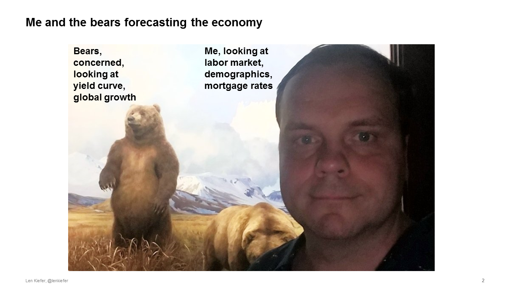
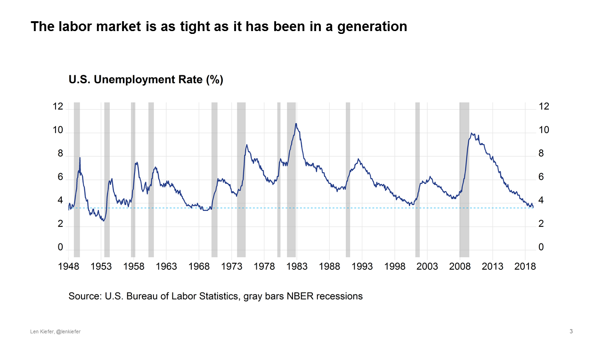
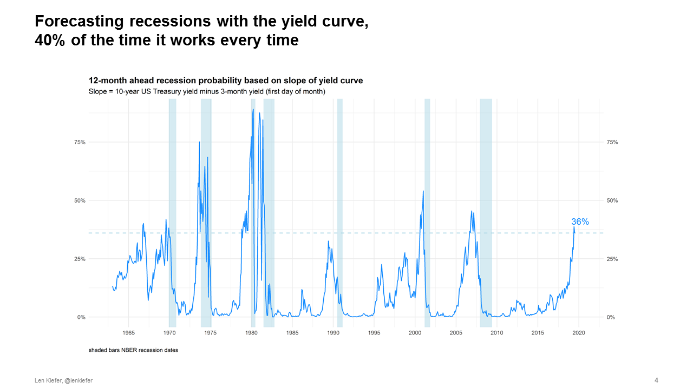
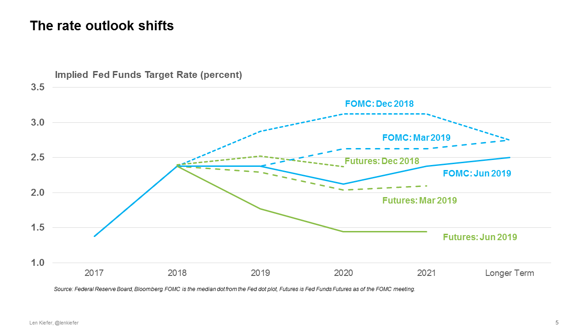
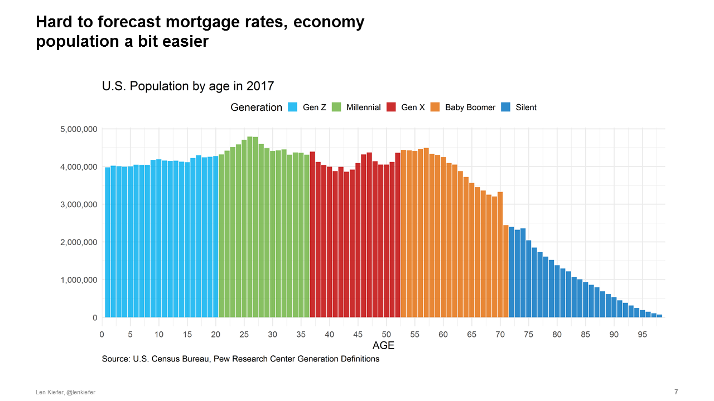
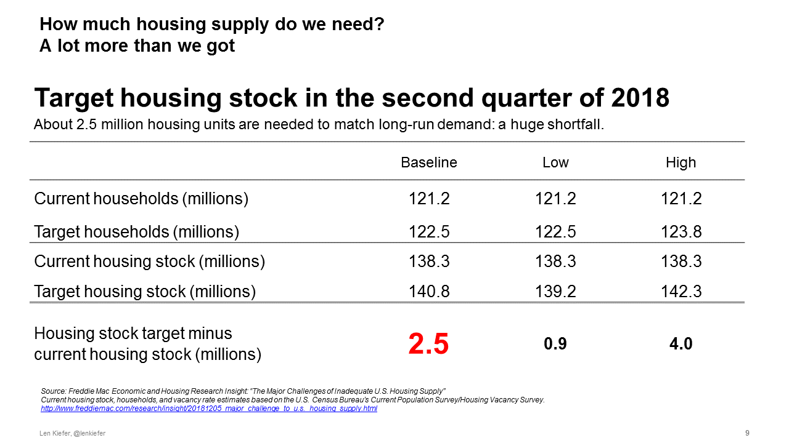
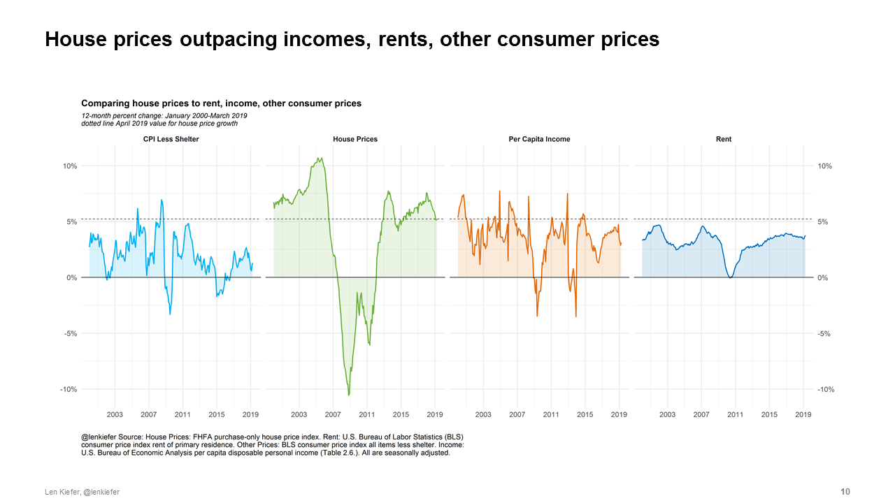
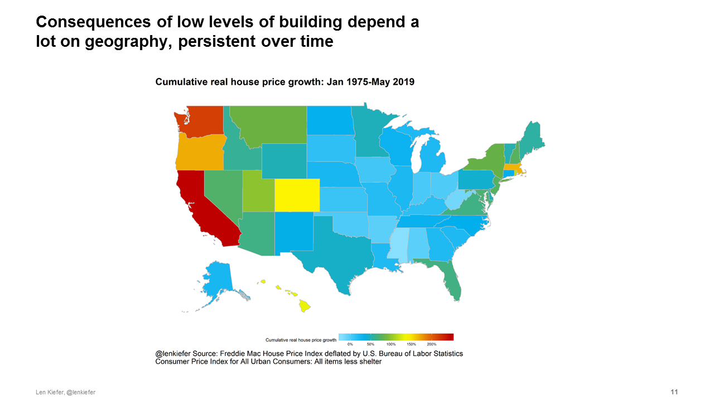
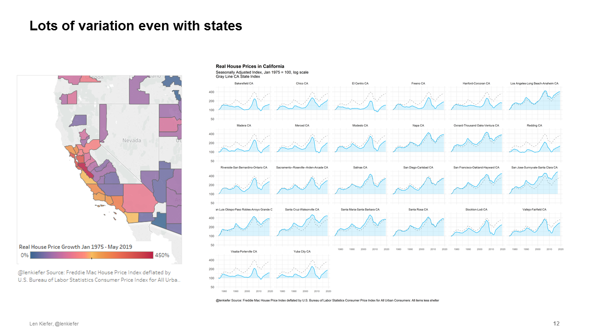

On intrinsic irreducible uncertainty of economic outcomes (forecasting is hard)
Here’s a picture of me and some bears. Don’t worry, I didn’t get hurt. Those bears couldn’t hurt anybody. First, because they are behind some glass. And second, because they are stuffed.

There are a lot of stuffed bears out there. They’ve grown aggressive lately. Maybe because they haven’t eaten much. This current economic expansion is over 10 years old now. It’s the longest in U.S. history going back to the 1850s. The age of the expansion isn’t all, those bears also see some signs that things might be slowing down.
But there are always signs. That’s what makes my job so difficult. Those bears, standing erect looking out over the vast horizon of economic data, they see an inverted yield curve and signs of slowing global growth. They say aha! Time to eat.
That’s me in the front looking over there and not that worried. I see a strong labor market, favorable demographics and low interest rates. I’m not scared. Do I look scared? But maybe I should be. The glass isn’t that thick.
The labor market is as tight as it has been in a generation
Many real economic indicators point to strength, especially labor market indicators. The U.S. headline unemployment rate is the lowest it has been since man walked on the moon. Alan Greenspan, over 90 years old and doing economics since the 1940s remarked last fall that the labor market was the tightest he had ever seen.

Low unemployment, solid job growth and gradually rising real wages provide the foundations for economic growth and broad-based prosperity. It is important to remember that the fruits of the economic expansion have not been shared equally. Only at this late stage, 10 years into expansion, have the gains begun to flow to a broader swath of the population. For example, real wages are now rising fastest for the lowest-earning workers.
A good labor market is far different from good enough. While there is no doubt that the labor market is better than it was a decade ago and generally improving there is also little doubt that there is room for improvement.
While a strong labor market is necessary for a healthy economy, it is not alone sufficient to keep growth going. In economic jargon, the labor market is a lagging indicator. Given noise in the data by the time we recognize a turning point in the labor market a recession is upon us. Even with the benefit of hindsight and future data revisions there are only about seven months on average between the trough in the unemployment rate and the start of the next recession.
Forecasting recessions with the yield curve, 40% of the time it works every time
Are there any good forward-looking indicators for the economy? Not really. One of the best of a weak bunch of indicators, historically, has been the slope of the U.S. Treasury yield curve. By comparing the yield on long and short maturity Treasury securities you get a complex mixture of information about inflation expectations, expected future short term real interest rates, maybe something called a term premium and other stuff. Within that yield curve however is some amalgam of forward-looking expectations.
The yield curve, summarized in various ways, has been a leading indicator of past recessions. A negative yield curve slope—an inverted yield curve—has preceded the past few recessions. And unlike the stock market, which has predicted nine out of the past five recessions, the yield curve has relatively few false positives.

Even so, the power of the yield curve to predict recessions is easily overstated. Saying that the yield curve inverted recently and at some indefinite point in the future there will be a recession isn’t really a prediction. For example, a statistical model such as a probit which helps reduce the bias inherent in eyeball econometrics and just-so storytelling gives less than a 40% chance of a recession in the next twelve months. And while model-based probabilities do rise ahead of recessions, they typically peak at around 40%. About a coin flip.
Though you might do better than a coin flip with more sophisticated approaches. See for example, Forecasting recessions with dynamic model averaging for one approach to try to squeeze more signal out of the data.
The rate outlook shifts
The outlook has shifted, significantly shifted, since last fall. In recent years the market has tended to be more skeptical of rate increases than economists and Fed officials. But over the past 6 months, the rate outlook has shifted down for all. In December of 2018 the FOMC dots were suggesting 2-3 rate hikes in 2019 while the market was pricing in one hike. As of June 2019, the FOMC dots moved to no hikes and the market was pricing in 2 to 3 rate cuts with a July a near certainty based on the implied probability derived from futures contracts.

The fundamental difference in the rate outlook introduces some additional fragility into the economy. Market participants expected a dovish Fed might be setting themselves up for disappointment. For example, some market participants were looking forward to an atypical 50 basis point cut in the fed funds rate in July. Following the “bad news good news” of a strong employment report for June, those hopes have faded. A dovish, but insufficiently dovish Fed could inject extra volatility into the market.
Forecasting is hard
It’s probably best for all of us if we could abandon hope of having very good macroeconomic forecasts until we develop precognition or make advancements in psychohistory. Without those supernatural tools we won’t have much luck.
History is very limited giving us small samples. Serial correlations reduced our effective sample sizes further. Finally, parameters are unstable, regime shifts frequent, so many models fail spectacularly out-of-sample. Innocuous data leakage or devious practice makes many purported out-of-sample exercises look far better than they ultimately will when making true out-of-sample predictions about the future. Forecasting is hard.
Hard to forecast mortgage rates or the economy population a bit easier
Absent psychohistory most economic forecast are highly inaccurate, unreliable. But there is one area where we have some hope. It is almost impossible to say where interest rates will be a year from now, quite difficult to say what your house will be worth in twelve months. It is somewhat easier to say how many 30-year olds will be living in the United States next year, especially if you know how many 29-year olds we have with us today.
Add description 
Demographics are favorable for the U.S. housing market. I have done some frequency-domain decompositions of housing market indicators, breaking up the variance in housing starts, home sales, house prices, etc into fluctuations at different frequencies. Unlike the unemployment rate or interest rates, which have a lot of variance due to fluctuations at business cycle frequencies (2-8 years) housing market indicators tend to have the preponderance of variance associated with medium-term (8-32 year) fluctuations. I strongly suspect that these medium-term housing cycles are driven by demographics.
Much ink has been spilled on the Baby Boomers and the Millennials. Due to sheer numbers these two generations will have a major impact on the course of U.S. housing markets. In 2018 we wrote two articles examining in detail the factors driving household formation and homeownership decisions for the 25-34 year-old age group, a key swing demographic for the housing market.
Young adults to drive housing, how will Boomers exit? Young adults of today lead quite different lives from previous generations. They are doubling up or living with parents at much higher rates than earlier cohorts. Part of that is due to sociological reasons, part is due to economic factors.
In terms of sociological factors, two key drivers of household formation and homeownership are marriage and fertility. Young adults of 2016 had a about a 10 percentage point lower marriage rate and a similar decline in fertility.
In addition to economic factors, the labor market has been tougher for today’s young adults. This is particularly true for male labor force participation, which has declined over 4 percentage points for this age group since 2000. If a strong labor market continues to draw workers off the sideline and participation ticks up that will help to boost housing demand.
We conducted separate studies looking at the household formation and homeownership of young adults. For each analysis we decomposed the decline in household formation or homeownership due to various factors. In both case housing costs were the dominant driver, explaining 28% of the decline in household formation (accounting for about 400,000 fewer households) and almost half of the decline in homeownership.
Intuitively, higher housing costs have hit the youngest age groups hardest. If you are a homeowner and housing prices increase you are likely better off. But if you haven’t bought a home yet, higher housing costs raise the barrier to entry. Indeed, for all age groups higher costs reduce homeownership but the effect is largest for the youngest age groups. As my colleagues wrote:
Who is living in those homes that millennials might otherwise have bought? We find that seniors born after 1931 are staying in their homes longer, and aging in place. The result is higher homeownership rates for this group relative to previous cohorts. We estimate that this trend accounts for about 1.6 million houses held back from the market through 2018, representing about one year’s typical supply of new construction, or more than half of the current shortfall of 2.5 million housing units estimated in December’s Insight. This additional demand for homeownership from seniors will increase the relative price of owning versus renting, making renting more attractive to younger generations. However, a shortfall of new construction puts upward pressure on both house prices and rental rates.
Why are seniors holding on to their homes? The pattern is explained by a few key factors, such as better health and higher levels of education in more recent cohorts. This pattern is likely to increase over time as improvements in health care and technology make aging in place easier (for example, the ability to Skype with a doctor).”
While demographic forces boost housing demand, housing supply has been woefully inadequate.
The Major Challenge of Inadequate U.S. Housing Supply
Consider this: over a forty-year period from 1968 to 2007 there were only two years when the U.S. added fewer gross housing units that it did in 2018. In 1982 when mortgage interest rates averaged 16% and in 1991 when the U.S. economy was in recession. Every other year the U.S. added more housing. Over that period the U.S. population continued to grow while the housing stock depreciated and fires, floods, other disasters destroyed units.

If we integrate over all of those years, compare housing demand to housing supply, we see a yawning chasm opening up in recent years. According to our baseline calculations the U.S. was undersupplied by 2.5 million units as of the second quarter of 2018. Since that the gap has only widened. Incremental housing demand is about 1.6 million units while the sum of housing completions and manufactured housing shipments over that time was just 1.3 million units.

These estimates are imprecise and rely on many assumptions. However, under a range of reasonable parametrizations the deficit is somewhere between one and four million units.
House prices outpacing incomes, rents, other consumer prices The result: house prices continue to outpace income, other consumer prices.

While price grow has decelerated, it remains well above income growth. Research has shown that deviations between house prices and fundamentals like income can persist for a very long time, with some research (Zhang, de Jong, Haurin 2016) calling into the question of notion of any long-run relationship or fundamentals whatsoever.
But research has also show that real estate history is littered with (Glaser 2013) booms, bubbles and busts. As we wrote close to two years ago in our article: “The B-word can we spot the next house price bubble” you only can truly tell a bubble after it has popped.
While research hasn’t proven that when it comes to house prices what goes up must come down, we should hesitate when patterns from the last decade start to emerge.
We also should consider closely what exactly is going on. Why do we see the persistent long-lasting spatial patterns?
Over the past 40 plus years, California has seen persistent real house price appreciation, far above what most other states have experienced. Though strong real house price growth is also evident in other western states.

States are too crude. We should look even closer if we could. Within even the Golden State there is substantial heterogeneity in house prices trends. The coastal areas, particularly those proximate to Silicon Valley have seen robust growth, while the interior has seen much more modest growth.

Understanding these local market trends is an important area of research. Rest of this section not public. but I say really cool stuff if you could be there
Don’t you pay them (stuffed bears) no nevermind
These considerations lead us to two seemingly contradictory conclusions regarding the U.S. macroeconomic and housing market outlook. But no worries, as a macroeconomist I have made a habit of reconciling seemingly contradictory ideas. Allow me to help.
First the bears.
Financial market indicators like the inverted yield curve and inflated asset prices relative to fundamentals suggest a fragility in this recovery. High home prices valuations are supported in part by expectations of future price appreciation. Traditional models that assume elastic supply suggest that this is crazy. Sky-high valuations should come down, restoring values close to fundamentals (never mind if we know that those are). But a long history of actual economic outcomes and recognition that supply is not elastic nor probably will be any time soon in many high growth markets may support ongoing high valuations.
So much then, as if often does, depends on expectations and mass psychology. Here is where psychohistory could be helpful. My dissertation was about imperfect common knowledge problems and their relationship to price setting. In this world seemingly random events, a tweet, a poorly phrased response by a policymaker, or a perfectly reasonable pronouncement misinterpreted can drive outcomes.
You can probably hear the bears growling. Their tummies are empty and this fat economy looks so tasty.
The opposite of fragility is resilience and fortunately the economy has some in-built resiliency. Over the next 10 years the Millennial generation will add 20 million households. Unlike prior expansion housing construction has not over-extended. With Millennials entering peak household-formation and homebuying years, and Boomers living longer healthier lives than prior generations, demographic forces should provide robust support to housing demand over the next few years.
Now I just told you that we can’t really predict economic outcomes. Prudent risk management suggests we should guard against the potential downside. We really should. Risks certainly seem to have been increasing. See for example, Boyarchenko, N., & Giannone (2016) for one way to analyze those increasing risks.
But the most likely scenario in my mind remains a continuation of recent trends. We see a solid labor market lead to modest increases in real wages. The housing market, buoyed by the robust labor market, powerful demographics and lower mortgage interest rates resumes modest growth. The baseline case remains in my mind fairly optimistic.
The stuffed bears are always lurking around, always saying the same thing. Always looking for some bit of negative news to reinforce their narrative. Don’t you pay them (stuffed bears) no nevermind.
References
For additional detail see the following:
Academic Papers
Adrian, T., Boyarchenko, N., & Giannone, D. (2016). Vulnerable growth. link to working paper pdf
Glaeser, E. L. (2013). A nation of gamblers: Real estate speculation and American history. American Economic Review, 103(3), 1-42.
Zhang, J., de Jong, R., & Haurin, D. (2016). Are US real house prices stationary? New evidence from univariate and panel data. Studies in Nonlinear Dynamics & Econometrics, 20(1), 1-18.
Research Reports
The “B” Word: Can We Spot the Next House Price Bubble?
Why is Adulting Getting Harder? Young Adults and Household Formation
Locked Out? Are Rising Housing Costs Barring Young Adults from Buying their First Homes?
The Major Challenge of Inadequate U.S. Housing Supply
While Seniors Age in Place, Millennials Wait Longer and May Pay More for their First Homes